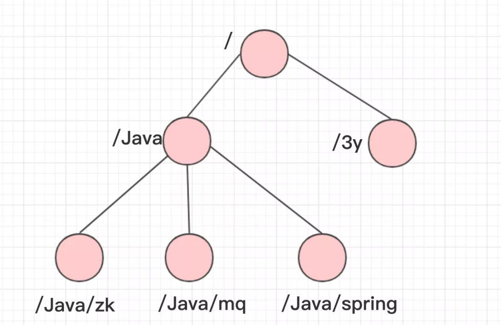
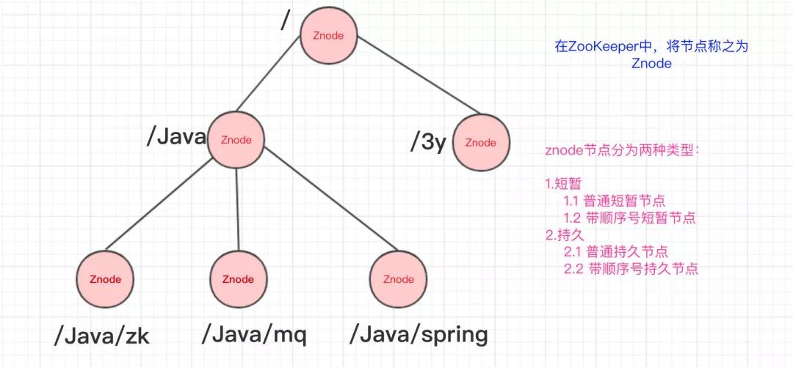
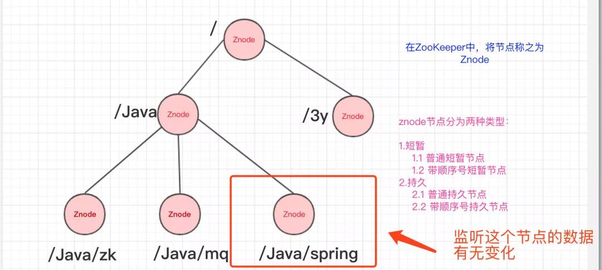
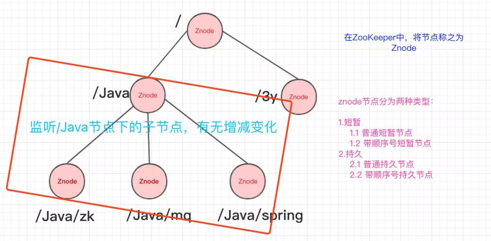
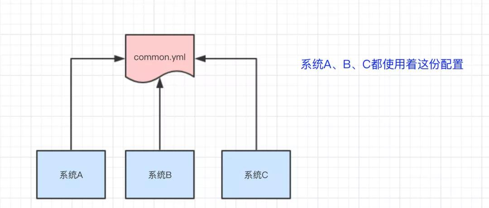
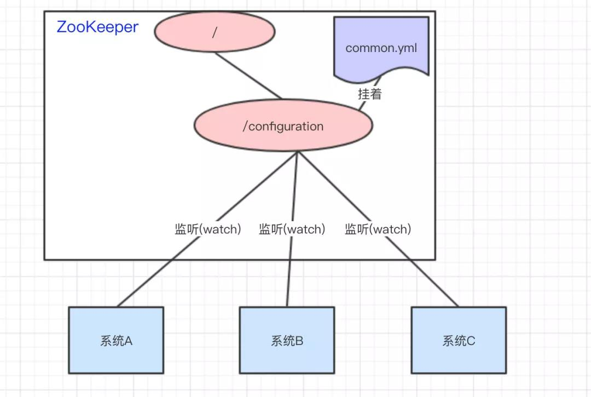
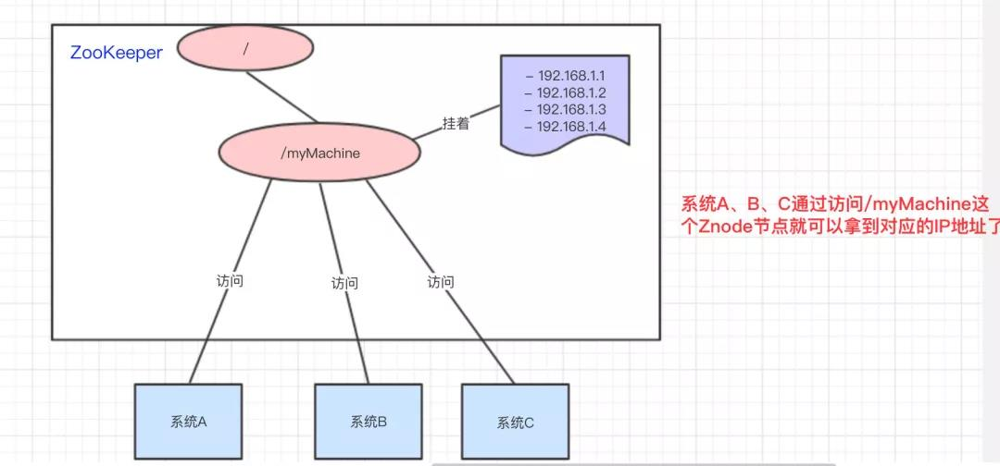
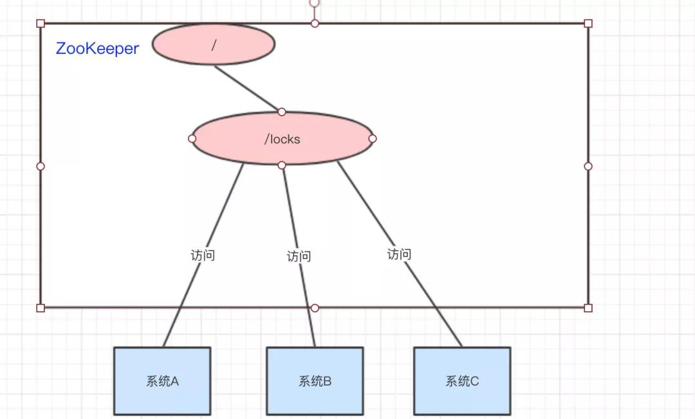
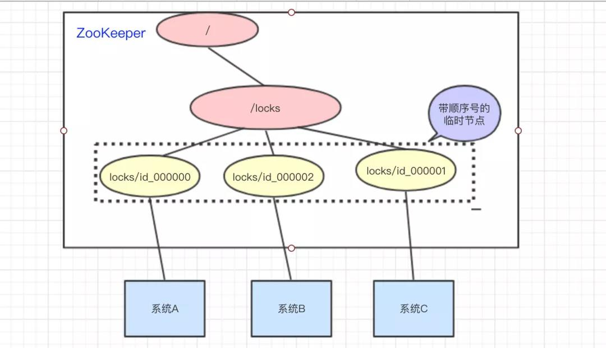
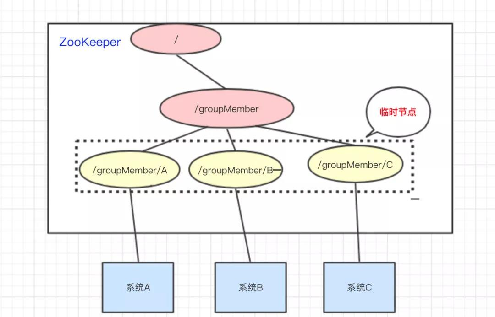

ZooKeeper基础
ZooKeeper基础
来自：Java3y（微信号：java3y）
什么是ZooKeeper
- ZooKeeper主要服务于分布式系统，可以用ZooKeeper来做：统一配置管理、统一命名服务、分布式锁、集群管理。
- 使用分布式系统就无法避免对节点管理的问题(需要实时感知节点的状态、对节点进行统一管理等等)，而由于这些问题处理起来可能相对麻烦和提高了系统的复杂性，ZooKeeper作为一个能够通用解决这些问题的中间件就应运而生了。
为什么ZooKeeper能干这么多？
ZooKeeper的数据结构，跟Unix文件系统非常类似，可以看做是一颗树，每个节点叫做ZNode。每一个节点可以通过路径来标识，结构图如下：

那ZooKeeper这颗”树”有什么特点呢？？ZooKeeper的节点我们称之为Znode，Znode分为两种类型：
- 短暂/临时(Ephemeral)：当客户端和服务端断开连接后，所创建的Znode(节点)会自动删除
- 持久(Persistent)：当客户端和服务端断开连接后，所创建的Znode(节点)不会删除
ZooKeeper和Redis一样，也是C/S结构(分成客户端和服务端)

监听器
常见的监听场景有以下两项：
- 监听Znode节点的数据变化
- 监听子节点的增减变化


通过监听+Znode节点(持久/短暂[临时])，ZooKeeper就可以玩出这么多花样了。
ZooKeeper是怎么做到的？
1、统一配置管理
有三个系统A、B、C，他们有三份配置，分别是ASystem.yml、BSystem.yml、CSystem.yml，然后，这三份配置又非常类似，很多的配置项几乎都一样。
- 此时，如果我们要改变其中一份配置项的信息，很可能其他两份都要改。并且，改变了配置项的信息很可能就要重启系统。
把ASystem.yml、BSystem.yml、CSystem.yml相同的配置项抽取出来成一份公用的配置common.yml，并且即便common.yml改了，也不需要系统A、B、C重启。

将common.yml这份配置放在ZooKeeper的Znode节点中，系统A、B、C监听着这个Znode节点有无变更，如果变更了，及时响应。

2、统一命名服务
统一命名服务的理解其实跟域名一样，是我们为这某一部分的资源给它取一个名字，别人通过这个名字就可以拿到对应的资源。
有一个域名 www.java3y.com，但我这个域名下有多台机器：
- 192.168.1.1
- 192.168.1.2
- 192.168.1.3
- 192.168.1.4
别人访问 www.java3y.com 即可访问到我的机器，而不是通过IP去访问。

3、分布式锁
系统A、B、C都去访问 /locks节点

访问的时候会创建带顺序号的临时/短暂(EPHEMERAL_SEQUENTIAL)节点，比如，系统A创建了id_000000节点，系统B创建了id_000002节点，系统C创建了id_000001节点。

接着，拿到 /locks节点下的所有子节点(id_000000,id_000001,id_000002)，判断自己创建的是不是最小的那个节点
- 如果是，则拿到锁。
- 释放锁：执行完操作后，把创建的节点给删掉。
- 如果不是，则监听比自己要小1的节点变化。
举个例子：
- 系统A拿到 /locks节点下的所有子节点，经过比较，发现自己(id_000000)，是所有子节点最小的。所以得到锁。
- 系统B拿到 /locks节点下的所有子节点，经过比较，发现自己(id_000002)，不是所有子节点最小的。所以监听比自己小1的节点id_000001的状态。
- 系统C拿到 /locks节点下的所有子节点，经过比较，发现自己(id_000001)，不是所有子节点最小的。所以监听比自己小1的节点id_000000的状态。
- ……
- 等到系统A执行完操作以后，将自己创建的节点删除(id_000000)。通过监听，系统C发现id_000000节点已经删除了，发现自己已经是最小的节点了，于是顺利拿到锁。
- ….系统B如上。
4、集群状态
三个系统A、B、C为例，在ZooKeeper中创建临时节点即可：

只要系统A挂了，那 /groupMember/A这个节点就会删除，通过监听groupMember下的子节点，系统B和C就能够感知到系统A已经挂了。(新增也是同理)
除了能够感知节点的上下线变化，ZooKeeper还可以实现动态选举Master的功能。(如果集群是主从架构模式下)
原理也很简单，如果想要实现动态选举Master的功能，Znode节点的类型是带顺序号的临时节点(EPHEMERAL_SEQUENTIAL)就好了。
- Zookeeper会每次选举最小编号的作为Master，如果Master挂了，自然对应的Znode节点就会删除。然后让新的最小编号作为Master，这样就可以实现动态选举的功能了。
最后
ZooKeeper通过Znode的节点类型+监听机制就实现那么多好用的功能了！